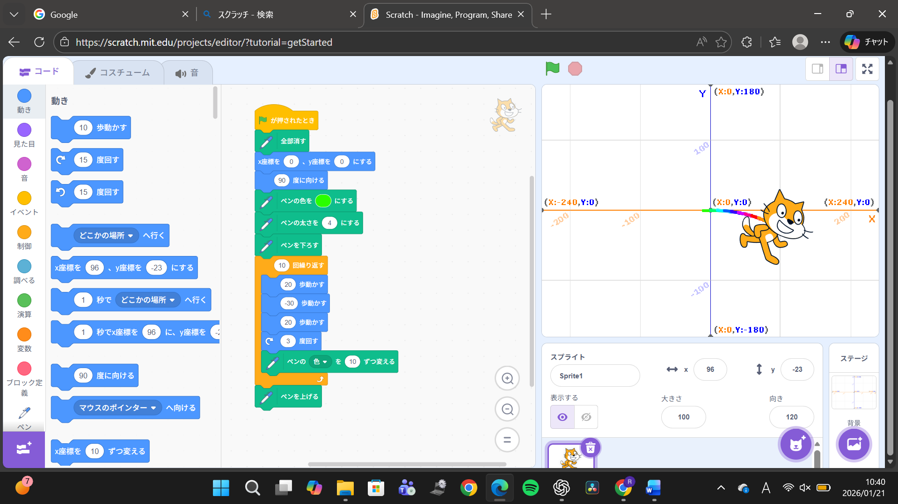
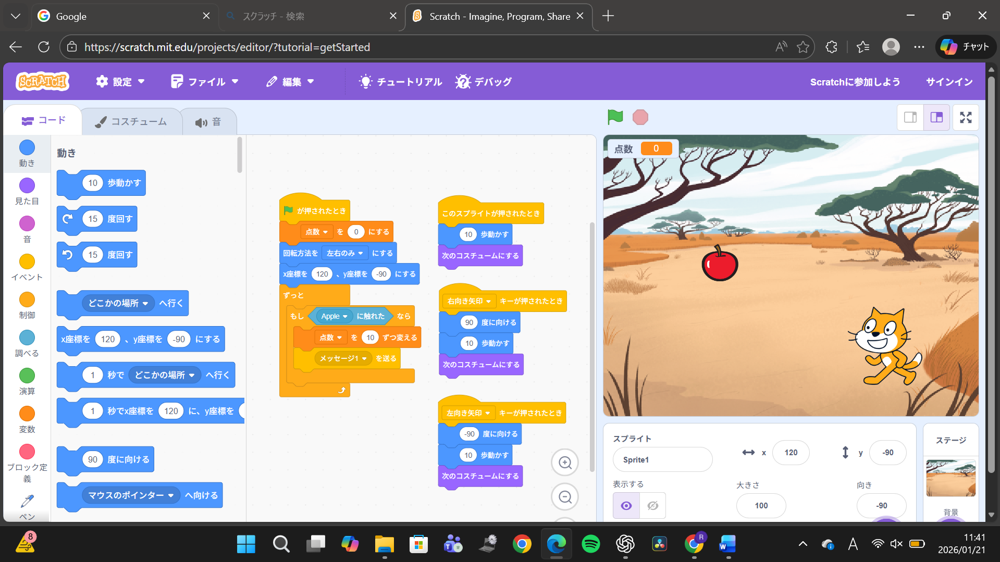

1週目のレポート ： 公大高専１年実習I-1
1b班23番 sugar2311
第1週目
1-1 サイエンスアート

1.内容
猫の動きに合わせてペンで線が残り、色まで変わる仕組み。命令を少し変えるだけで模様が崩れるのが予想外で、プログラムの繊細さを実感しました。
2.感想
猫を少し回転させただけで線が円のようにつながったときや、単純な命令の組み合わせで模様が変わる、その不思議さが興味深いと感じました。
1-2 ゲーム

1.内容
矢印キーで猫を動かし、落ちてくるリンゴに触れると得点が増える仕組みを作成しました。落下位置や速さを変える仕組みも追加しました。
2.感想
リンゴの落ちる位置と速さをランダムにした途端、すべて取ることが難しくなりました。猫を左右に動かすだけなのに、運要素で難易度が変わるところが印象的でした。
1-3 ホームページ作成
私のホームページ
1.内容
配布されたHTMLを基に、画像ファイルをアップロードし表示されているか確認しました。また、レポートとして表示される文章部分のみ内容を編集しました。
2.感想
画像のファイル名が1字違うだけでで画像が出ず、追加ができているか何度も確認しました。編集するとページがうまく表示されないところを編集してしまっていないか怖かったです。
各ページへのリンク
1週目のレポート
2週目のレポート
3週目のレポート
私のホームページ